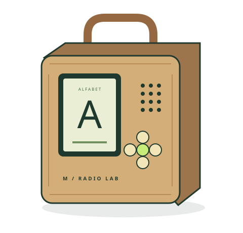

A RASPBERRY PI PROJECT / BUILT FOR CURIOUS HANDS
A small radio.
A world to explore.
Five buttons, a little screen, and something new to learn. An offline player and Polish alphabet companion you can build, understand, and adapt.
Python · Raspberry Pi 3 · MIT code

01 / PRESS A BUTTON
Meet the alphabet.
Move between 32 Polish letters. Turn the volume up or down. Press the center to change the playback indicator.
This browser demo shows control behavior. The Python app drives the physical screen, audio, and stroke animations.
← → letters / ↑ ↓ volume / space play
02 / INSIDE THE BOX
Small parts.
Understandable connections.
SPI for the display, I²S for the speaker, and I²C for the button reader. The wiring guide connects the whole system.
| Part | Qty | Connection |
|---|
03 / MAKE IT YOURS
Start on your computer.
Bring it to the Pi.
The hardware-free simulator saves a screen preview. The build kit includes a neutral demo card, source code, and wiring instructions.
python3 -m venv .venv
source .venv/bin/activate
python -m pip install -r requirements.txt
python -m app --simulate player --once --no-audioLoading project specifications…